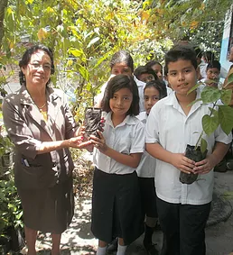
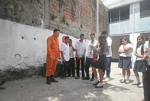
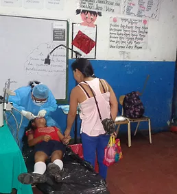
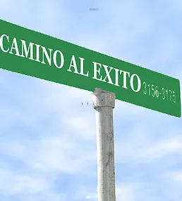

Concientes que nuestro medio ambiente se esta degrando día con día como Institución Educativa buscamos apoyo en CESTA para poder implementar proyectos con nuestros educandos para desarrollo de procesos de formación en cambio climático, gestión de desechos, formación de viveros y arborización, uso de agua, huertos escolares, alimentos nutritivos, energía, mecanismos de protección de la naturaleza y el reconocimiento y respeto a los derechos humanos y los deberes de niños, niñas y adolescentes.

Entidades como la Cruz Roja Salvadoreña estan desarrollando capacitaciones de primeros auxilios con el fin que en una emergia por desastres naturales sean estos alumnos un apoyo en caso que fuese necesario, dotandonos tambien de el equipo necesario para actuar de manera rapida.

El objetivo del Comité es promover la construcción de una cultura de prevención, encaminada a disminuir los factores de riesgo a la integridad física y la seguridad de los miembros de la comunidad escolar, fortalecer los factores de protección que permitan la anticipación, la atención y la superación de situaciones que puedan poner en peligro la seguridad e integridad física, disminuir el impacto de las contingencias que no puedan evitarse, como es el caso de desastres naturales.
Este a sido unos de los proyectos que mayor impacto a tendio en nuesta comunidad ya que no solo se a venefiado a nuestros alumnos,Docentes sino tambien a padres de familia, como a vecinos de nuestros alrededores brindando la atencion médica por miembros del Instituto Salvadoreño del Seguro Social, brindando servicios como odontología, ginecología,medicina general.
De esta manera estamos apoyando en la economía de la comunidada ya que estos servicios son gratuitos, gracias a estas Instituciones que trabajan de la mano con el Ministerio de Edicación.

La formación académica es fundamental para la vida convertirse en personas profesionales en un futuro pero como seres humanos necesitamos otros amprendizajes como son los valores morales y espiritales concientes de ello estamos desarrollando el proyecto con apoyo de personas altruistas pertenecientes a la fundación Be/LivES que toman parte del tiempo de su trabajo para apoyarnos impartiendo charlas orientadas a seguir por el buen camino, respetando las creencias de cada alumno, haciendoles conciencia que de la mano de Dios seremos personas de bien.

© 2019 COMPLEJO EDUCATIVO COLONIA EL MILAGRO | Diseño:Proyecto TPI